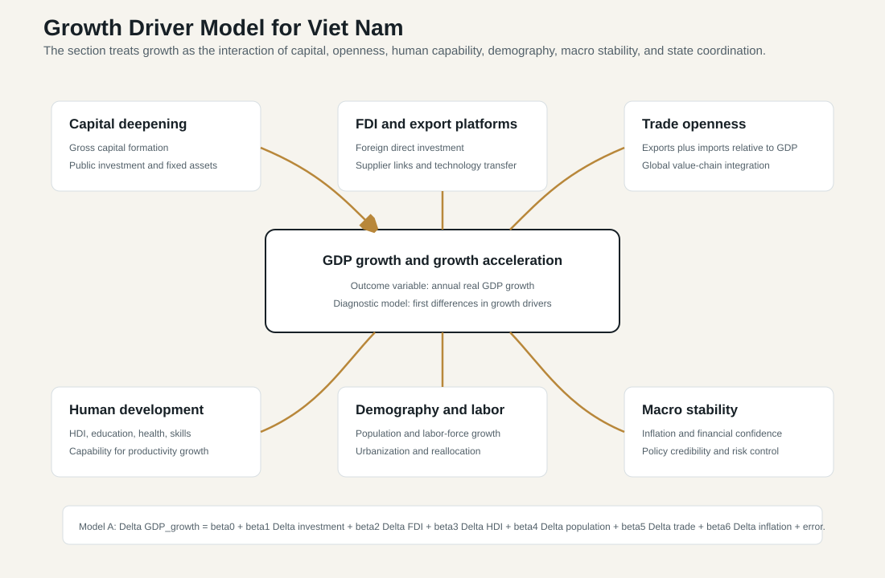
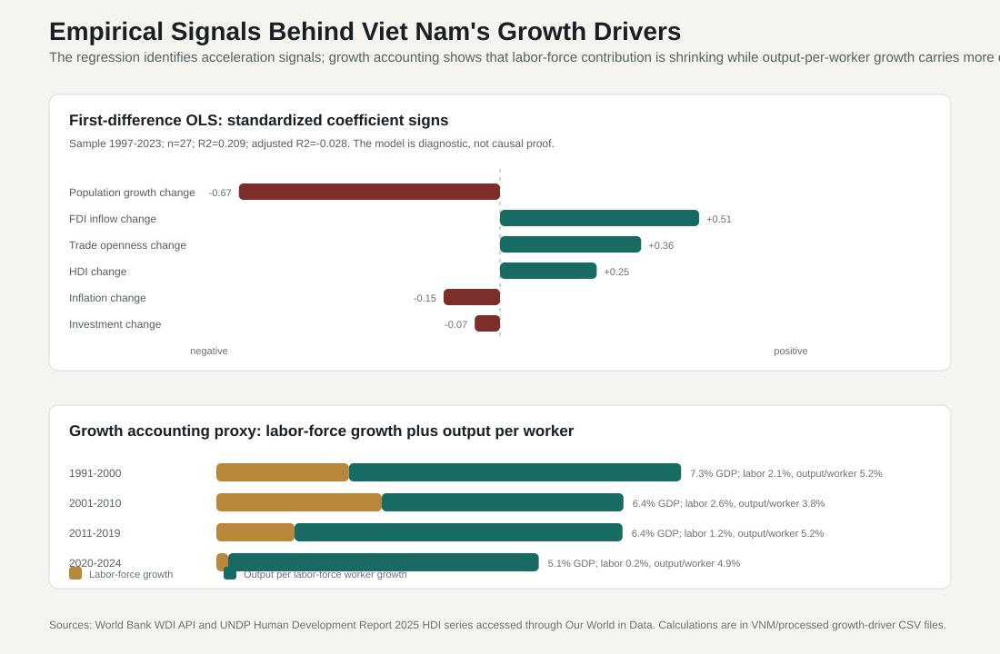

9.5 Growth Driver Model and Interpretation
ASEAN comparative lens (2026). Vietnam should be read in ASEAN comparison as ASEAN's most prominent party-led, export-manufacturing upgrading case. Unlike the Philippines' service-remittance profile, Thailand's older industrial-tourism base, Malaysia's resource-industrial federal structure, or Indonesia's archipelagic domestic-market scale, Vietnam's comparative issue is how a socialist party-state manages very open global production networks. For this section, the regional comparison should compare growth, inflation, exchange-rate exposure, productivity, and sectoral structure with ASEAN's manufacturing, services, tourism, resource, and corridor-based models. Local comparable indicators show: population 100.99 million (2024), rank 3 among the nine ASEAN reports in this workspace; GDP US$476.39 billion (2024), rank 4 among the nine ASEAN reports in this workspace; GDP per capita US$4,717 (2024), rank 5 among the nine ASEAN reports in this workspace; real GDP growth 7.09% (2024), rank 1 among the nine ASEAN reports in this workspace; government effectiveness 0.09 (2023), rank 6 among the nine ASEAN reports in this workspace; internet use 84.15% (2024), rank 4 among the nine ASEAN reports in this workspace. Use `sources/documents/regional/asean_comparative_lens_2026.md` together with ASEANstats, ASEAN Secretariat materials, and the country processed-indicator files before making cross-ASEAN claims.
This section asks a direct question: what has driven Viet Nam's economic growth? The answer cannot be reduced to one variable. Viet Nam's growth has been produced by the interaction of institutional reform, capital accumulation, foreign investment, trade openness, labor reallocation, human-development gains, infrastructure expansion, and macroeconomic stability. A useful model therefore has to do two things at once. It should test whether the usual growth variables move with GDP growth, but it should also interpret those variables through the country's political economy: Doi Moi reform, a party-led development state, provincial implementation, export manufacturing, FDI, demographic transition, and integration into global value chains.
The analysis below uses three complementary models. The first is a first-difference regression close to the model specification suggested in the prompt. It asks whether changes in investment, FDI, HDI, population growth, trade openness, and inflation are associated with changes in GDP growth. The second is a growth-accounting proxy that decomposes real GDP growth into labor-force growth and output-per-labor-force growth. The third is a political-economy interpretation model that connects the statistical signals to the institutional mechanisms discussed in the rest of the book.

9.5.1 Model 1: First-Difference Growth Acceleration Model
The first model follows the logic of a growth-acceleration equation:
```text
Delta GDP_growth_t =
beta_0
+ beta_1 Delta investment_t
+ beta_2 Delta FDI_t
+ beta_3 Delta HDI_t
+ beta_4 Delta population_growth_t
+ beta_5 Delta trade_openness_t
+ beta_6 Delta inflation_t
+ error_t
```
The dependent variable is the annual change in real GDP growth. The explanatory variables are first differences in gross capital formation as a share of GDP, FDI net inflows as a share of GDP, the Human Development Index, population growth, trade openness, and CPI inflation. First differences are useful because they reduce the risk of simply measuring common upward or downward trends. In this specification, the model does not ask whether Viet Nam is richer when trade is higher or HDI is higher. It asks whether growth accelerates when these variables change.
The dataset combines World Bank WDI indicators and the UNDP Human Development Report 2025 HDI series accessed through Our World in Data. The usable regression sample is 1997-2023 because investment and inflation data begin later than the GDP, population, trade, and HDI series. The model uses 27 annual observations. This is a small sample for a six-variable time-series regression, so the results should be read as diagnostic evidence rather than causal proof.
| Variable in first-difference model | Coefficient | Standardized beta | t-statistic | Interpretation |
|---|---|---|---|---|
| Change in gross capital formation, percentage points of GDP | -0.065 | -0.07 | -0.25 | Investment quantity alone does not explain annual growth acceleration. This does not mean investment is unimportant; it means the annual investment share is a noisy proxy for capital quality, project execution, and lagged effects. |
| Change in FDI net inflows, percentage points of GDP | 0.705 | 0.51 | 1.51 | FDI has the strongest positive acceleration signal among the economic-opening variables. Years when FDI inflows rise tend to be years when growth momentum improves, although causality can run both ways. |
| Change in HDI, index points multiplied by 100 | 1.800 | 0.25 | 1.14 | Human development moves in the expected positive direction, but HDI changes slowly and includes an income component, so it should be interpreted as a broad capability signal rather than a clean independent cause. |
| Change in population growth, percentage points | -7.530 | -0.67 | -2.01 | The negative sign reflects Viet Nam's demographic transition rather than a simple claim that people reduce growth. As population growth slows, growth can still remain high if productivity and capital deepening rise. |
| Change in trade openness, percentage points of GDP | 0.065 | 0.36 | 1.45 | Trade openness has a positive acceleration signal. This fits the export-platform interpretation: trade integration helps growth when it is paired with FDI, logistics, industrial zones, and macro stability. |
| Change in CPI inflation, percentage points | -0.047 | -0.15 | -0.59 | Inflation changes carry a weak negative signal. The stronger interpretation is institutional: stable inflation protects investor confidence, household purchasing power, and exchange-rate credibility. |
The model's R-squared is 0.209 and adjusted R-squared is -0.028. This weak fit is important. It tells us that Viet Nam's growth cannot be explained well by a simple annual first-difference equation. Several reasons are likely. Investment affects growth with lags, not only in the same year. FDI is both a cause and a response: investors enter Viet Nam because growth prospects are strong, and their entry then reinforces exports, employment, and technology absorption. Trade openness is structurally rising over time, but global shocks can reduce growth even when trade ratios remain high. HDI improves gradually and is partly endogenous because income is one component of the index. Finally, annual country-level time series cannot easily capture policy reforms, provincial implementation quality, supply-chain relocation, infrastructure completion, anti-corruption cycles, or global demand shocks.
The regression is therefore most useful for ranking signals, not for proving causation. The strongest positive standardized signals are FDI and trade openness. HDI is positive but slower-moving. Inflation is negative but weak. Investment is statistically weak in this short-run acceleration form. Population growth has a negative coefficient because the demographic dividend is changing: Viet Nam can no longer rely on rapid labor-force expansion as much as it did in earlier decades.

9.5.2 Model 2: Growth Accounting Proxy
The second model uses a simpler identity. Real GDP growth can be approximated as labor-force growth plus output-per-labor-force growth:
```text
Real GDP growth ~= labor-force growth + output per labor-force worker growth
```
This is not a full Solow growth accounting exercise because it does not separately estimate physical capital, human capital, and total factor productivity. But it is still helpful because it separates the demographic-labor contribution from the productivity-capital-structural contribution. The calculation uses World Bank WDI real GDP in constant 2015 US dollars and total labor force.
| Period | Average real GDP growth | Average labor-force growth | Average output per labor-force worker growth | Interpretation |
|---|---|---|---|---|
| 1991-2000 | 7.30% | 2.08% | 5.22% | Early post-Doi Moi growth combined labor absorption with very rapid output-per-worker gains from market reform, agricultural incentives, early industrialization, and normalization of external economic relations. |
| 2001-2010 | 6.40% | 2.60% | 3.80% | Labor-force growth was still large, while WTO accession, FDI, trade, construction, and credit expansion deepened the growth model. Productivity growth was positive but less dominant than in the 1990s. |
| 2011-2019 | 6.38% | 1.23% | 5.15% | The labor contribution slowed, but output-per-worker growth rose again. Export manufacturing, electronics, industrial zones, infrastructure, services, and macro stabilization carried more of the growth burden. |
| 2020-2024 | 5.07% | 0.19% | 4.88% | COVID-19 and global shocks lowered average growth, but the accounting signal is clear: growth is now overwhelmingly dependent on productivity, capital quality, supply-chain upgrading, and institutional capacity rather than labor-force expansion. |
This decomposition is one of the strongest findings in the section. Viet Nam's growth was never only a population story, but demographic expansion mattered much more in the 1990s and 2000s than it does now. The 2020-2024 period shows labor-force growth close to zero in average terms, while output per labor-force worker still grew strongly. That means the next stage of growth must come from capital productivity, skills, technology transfer, domestic supplier upgrading, logistics, energy reliability, digitalization, better public investment, and higher-value services.
9.5.3 Model 3: Production-Function Interpretation
A standard production-function lens writes output as a function of capital, labor, human capital, and technology:
```text
Y_t = A_t K_t^alpha (H_t L_t)^(1-alpha)
```
In this interpretation, Viet Nam's growth has four engines. First, capital accumulation has been high. Gross capital formation averaged 28.3 percent of GDP in 1991-2000, 35.4 percent in 2001-2010, 31.5 percent in 2011-2019, and 31.9 percent in 2020-2024. These are high investment ratios for a lower-middle-income economy. But the regression result warns that the investment share alone is not enough. What matters is whether investment becomes productive infrastructure, reliable electricity, logistics capacity, industrial land, digital systems, water management, and skills formation rather than low-return construction, real-estate speculation, or delayed public projects.
Second, labor and demographic change supported growth, but their role is declining. In the earlier period, a growing labor force and movement out of agriculture helped Viet Nam absorb workers into factories, construction, services, and urban-industrial corridors. That labor reallocation raised output per worker even when technology was not frontier-level. But the labor-force growth contribution has fallen sharply. This makes aging, skills, health, vocational training, labor mobility, affordable urban housing, and social insurance portability more important for macroeconomic performance.
Third, human development has raised the economy's absorptive capacity. HDI rose from 0.499 in 1990 to the mid-0.7 range by the early 2020s. This matters because FDI does not automatically create domestic capability. Workers must be educated enough to use imported machinery, firms must learn from foreign buyers, and public institutions must provide health, transport, electricity, and administrative services. HDI should therefore be read not as a short-run growth trigger but as a capacity foundation that makes capital and trade more productive.
Fourth, total factor productivity in a broad sense has come from reform, openness, and coordination. Doi Moi changed incentives; ASEAN, WTO, CPTPP, RCEP, bilateral trade agreements, and supply-chain relocation widened markets; provincial industrial zones converted land and infrastructure into production platforms; and macro stability made long-term investment less risky. These are not captured well by a single annual variable, but they explain why the same investment ratio can generate different growth outcomes depending on policy quality.
9.5.4 Export-Platform and FDI-Led Growth Model
High investment alone does not explain Viet Nam's growth. It is the combination of FDI, trade openness, manufacturing exports, and state coordination. Trade openness averaged 85.7 percent of GDP in 1991-2000, 131.3 percent in 2001-2010, 143.9 percent in 2011-2019, and 174.4 percent in 2020-2024. FDI net inflows averaged 6.95 percent of GDP in the 1990s, then 5.31 percent in 2001-2010, 4.59 percent in 2011-2019, and 4.33 percent in 2020-2024. Even as FDI's GDP share eased, its structural role remained large because it anchored electronics, machinery, garments, footwear, furniture, phones, computers, and export-platform manufacturing.
This model works through five mechanisms. FDI brings capital, managerial routines, export orders, supplier requirements, and technology exposure. Trade agreements and customs integration give firms market access. Provincial governments provide industrial parks, licensing, land conversion, labor supply, and infrastructure support. Macroeconomic stability protects exchange-rate and inflation expectations. A disciplined political system can prioritize industrialization, logistics, and export competitiveness across ministries and provinces.
The same model also creates vulnerabilities. FDI can remain enclave-like if domestic suppliers do not upgrade. Trade openness exposes Viet Nam to external demand cycles, tariff shocks, rule-of-origin pressure, and geopolitical risk. Export success can hide weak domestic value added. Industrialization raises electricity, transport, land, and environmental pressure. If domestic private firms, research institutions, skills systems, and regulatory predictability do not improve, Viet Nam may remain a strong assembly platform without becoming a deeper innovation economy.
9.5.5 Why the Regression Understates Institutions
The model specification includes investment, FDI, HDI, population, trade, and inflation, but the most important driver behind these variables is institutional conversion. Doi Moi was an institutional shock that changed incentives. WTO accession was not only a trade event; it changed legal commitments, firm expectations, customs administration, and investor confidence. Public investment matters only when planning, procurement, land clearance, and implementation work. FDI matters only when the state can provide predictable procedures, electricity, roads, ports, workforce supply, and political stability. HDI matters only when education and health systems produce usable capability. Inflation matters because macro stability is a credibility asset.
This is why a purely econometric answer would be too narrow. Viet Nam's growth has been driven by a governance model that converts political centralization into development coordination, while allowing market-oriented production and international integration. The model is not frictionless: anti-corruption campaigns can slow approvals, local implementation can be uneven, SOE and banking risks remain, and policy uncertainty can discourage private investment. But the broad historical pattern is clear. Growth has been strongest when party-state coordination, provincial implementation, FDI, trade, infrastructure, and macro stability reinforce one another.
9.5.6 Answer: What Has Driven Viet Nam's Growth?
The evidence points to a layered answer.
First, the foundational driver was reform. Doi Moi, market pricing, agricultural decollectivization, private-enterprise recognition, legal reform, and external opening raised productivity by changing incentives. This explains why the 1990s combined rapid growth with strong output-per-worker gains.
Second, the central growth mechanism became FDI-led export manufacturing. The first-difference model gives FDI and trade openness the strongest positive acceleration signals. This does not prove simple causality, but it fits the historical evidence: Viet Nam grew by becoming a reliable production platform inside Asian and global value chains.
Third, investment mattered through capital deepening, but investment quality mattered more than the investment share. High gross capital formation gave Viet Nam roads, ports, factories, urban construction, power systems, and industrial capacity. Yet the weak short-run coefficient on investment shows that capital accumulation is not automatically growth-enhancing. Public investment execution, logistics efficiency, power reliability, environmental standards, and industrial upgrading determine the payoff.
Fourth, labor reallocation mattered, but the demographic dividend is fading. Earlier growth benefited from labor-force expansion and movement out of agriculture. The growth-accounting proxy now shows that labor-force growth contributes little to aggregate growth. Future growth must therefore come from productivity rather than more workers.
Fifth, human development and macro stability are enabling conditions. HDI improvement made Viet Nam better able to absorb technology, organize production, and support urban-industrial growth. Inflation control and macro stability protected the confidence needed for investment and trade. They do not always appear as large annual coefficients, but without them the FDI-export model would be much less durable.
The policy implication is direct. Viet Nam's past growth was driven by reform, labor absorption, capital accumulation, FDI, trade, and macro stability. Its future growth will depend more on productivity, domestic firm upgrading, higher-value services, innovation, skills, infrastructure quality, energy reliability, climate resilience, and predictable regulation. The growth model is therefore shifting from "mobilize labor and attract factories" toward "raise productivity and capture more value." That shift is the central macroeconomic challenge for Viet Nam's next development stage.